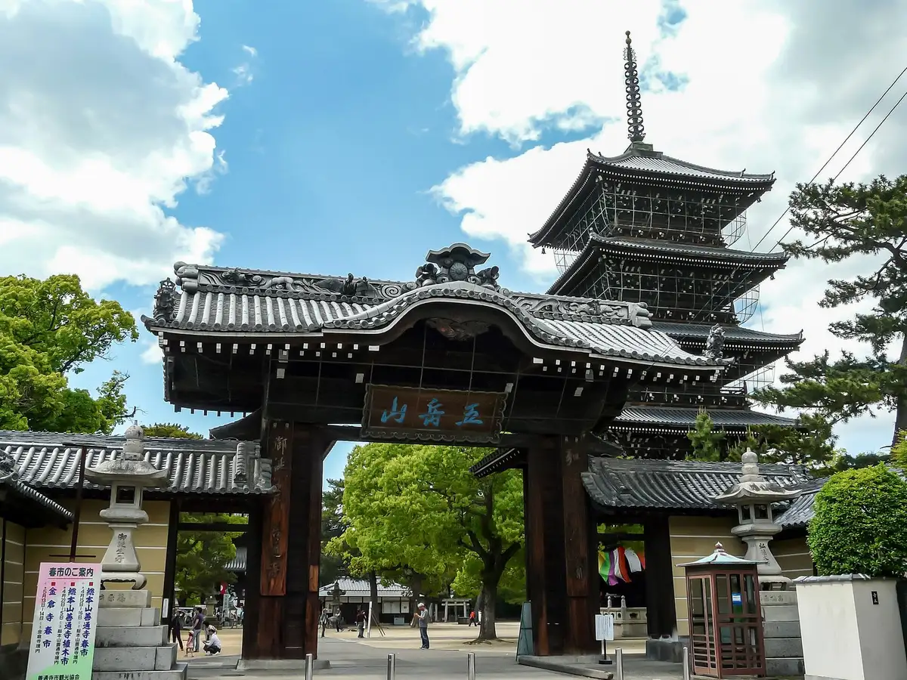
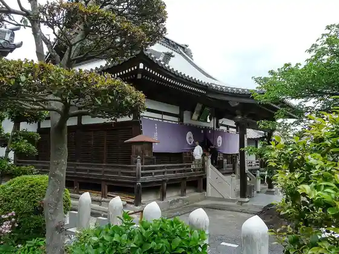
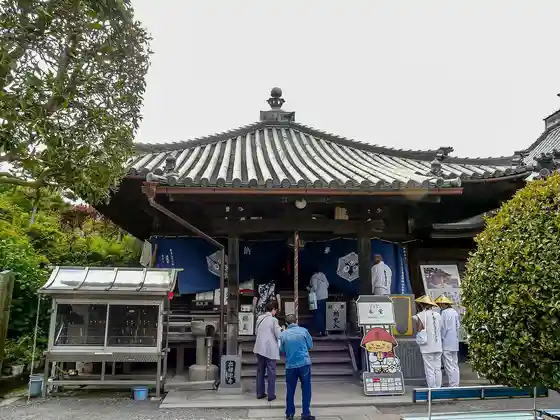
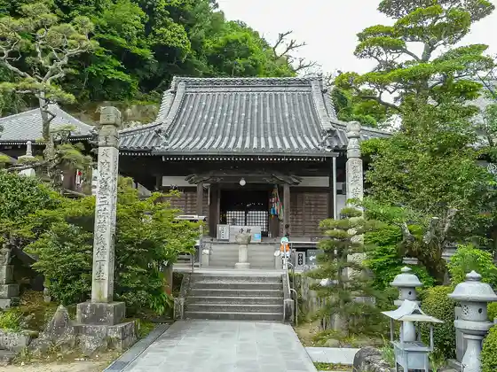
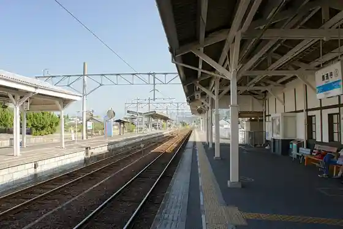

Zentsuji
Zentsuji · Kagawa
Zentsuji
Highlighted on the Kagawa map.

Stay
Zentsuji Gu Land Hotel
Guest House Mikasasukasa
O Henro Yado Tabibito no Yado Kaze no Kuguru
Henro Minshuku Tsurukichi
Dining
Bincho Ogiya Zentsuji Mise
Juri Iori
Yakiniku Matsusaka Main Shop
Men Roku Ya Kagawa Zentsuji Mise
Honkaku Teuchi
Bo no
Matsu Village Shokudo
Shirakawa Udon
Nikoichi
Genkiya Shokudo
Kagawa Ie
Takoyaki Nishioka Shoten
Peizan Zentsuji Main Shop
Sennari Shokudo
Tamaya
Ryu Ko
Onsen
Zentsuji Gu Land Hotel Public Bath
Henro Minshuku Tsurukichi Rotemburo
Sights
Sohonzan Zentsuji
Mandara Tera

Shutsu Shaka Tera

Kozan Tera

Zentsuji Eki

Zentsuji Art Museum